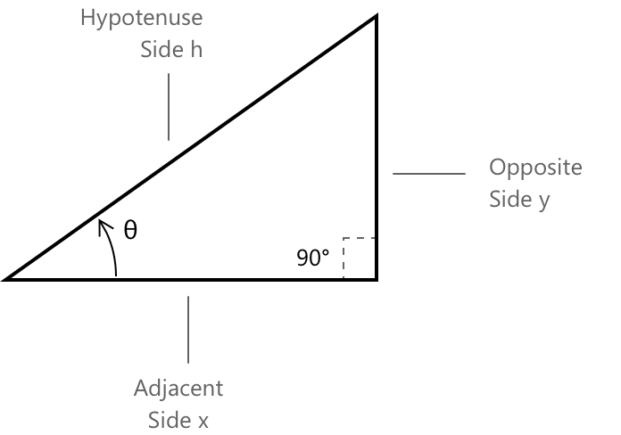
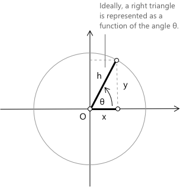

Тригонометрія прямокутного трикутника
Розуміння сторін прямокутного трикутника
Тригонометрія — це фундаментальний розділ математики, що вивчає зв'язки між кутами та сторонами трикутників. Зокрема, прямокутний трикутник слугує відправною точкою для означення основних тригонометричних функцій: синуса, косинуса та тангенса. Прямокутний трикутник — це трикутник, який має кут \(90^\circ\). Якщо ми розглянемо гострий кут \(\theta\) у трикутнику, ми можемо визначити основні тригонометричні функції, використовуючи відношення між його трьома сторонами:

- Гіпотенуза \(h\): найдовша сторона, що лежить проти прямого кута.
- Протилежний катет \(y\): сторона, що лежить проти кута \(\theta\).
- Прилеглий катет \(x\): сторона, що прилежить до кута \(\theta\).
Існують специфічні зв'язки між сторонами прямокутного трикутника та тригонометричними функціями синусом, косинусом і тангенсом. Ці зв'язки дозволяють нам визначити, наприклад, синус кута \( \theta \), або, за відомого значення \( \theta \) та принаймні однієї сторони, обчислити довжини інших сторін.
Метод SOH-CAH-TOA
Тепер розглянемо одиникове коло та кут \(\theta\), розташований у початку координат декартової системи координат.

Використовуючи метод SOH-CAH-TOA, ми можемо визначити три основні тригонометричні функції синус і косинус та тангенс, а також обернені тригонометричні функції косеканс, секанс та котангенс наступним чином.
\[\text{SOH} \quad \sin(\theta) = \frac{y}{h} \quad \quad \csc(A) = \frac{h}{y}\]
Очевидно, що якщо ми хочемо знайти довжину протилежної сторони \( y \), використовуючи зв'язок SOH, знаючи кут \( \theta \) та гіпотенузу \( h \), ми отримаємо \(y = h \times \sin(\theta).\) Аналогічно це міркування можна поширити на наступні зв'язки CAH та TOA.
\[\text{CAH} \quad \cos(\theta) = \frac{x}{h} \quad \quad \sec(A) = \frac{h}{x} \]
\[\text{TOA} \quad \tan(\theta) = \frac{y}{x} \quad \quad \cot(A) = \frac{x}{y}\]
Піфагорова тотожність
Ключовим аспектом тригонометрії є зв'язок між синусом і косинусом, що виражається Піфагоровою тотожністю:
\[ \sin^2(\theta) + \cos^2(\theta) = 1 \]
Піфагорова тотожність — це рівняння, що пов'язує тригонометрію та геометрію. Вона випливає безпосередньо з теореми Піфагора, яка пов'язує сторони прямокутного трикутника. Якщо ми розглянемо прямокутний трикутник з гіпотенузою довжиною \(1\), тоді, визначивши гострий кут \(\theta\) на одиниковому колі, довжини катетів будуть відповідно рівні синусу \(\sin(\theta)\) та косинусу \(\cos(\theta)\).
Приклад
Обчислимо довжину сторони \( x \), за умови що \( y = 5 \) та \( \theta = 30^\circ \).
Щоб отримати сторону \( x \), використаємо:
\[ \tan(\theta) = \frac{\text{Протилежний}}{\text{Прилеглий}} \quad \text{де} \quad \theta = 30^\circ \]
\[ \tan(30^\circ) = \frac{5}{x} \]
Маємо:
\[ \tan(30^\circ) \cdot x = 5 \]
\[ x = \frac{5}{\tan(30^\circ)} \]
Розв'язавши відносно \( x \), отримаємо: \[ x \approx 8.66 \]